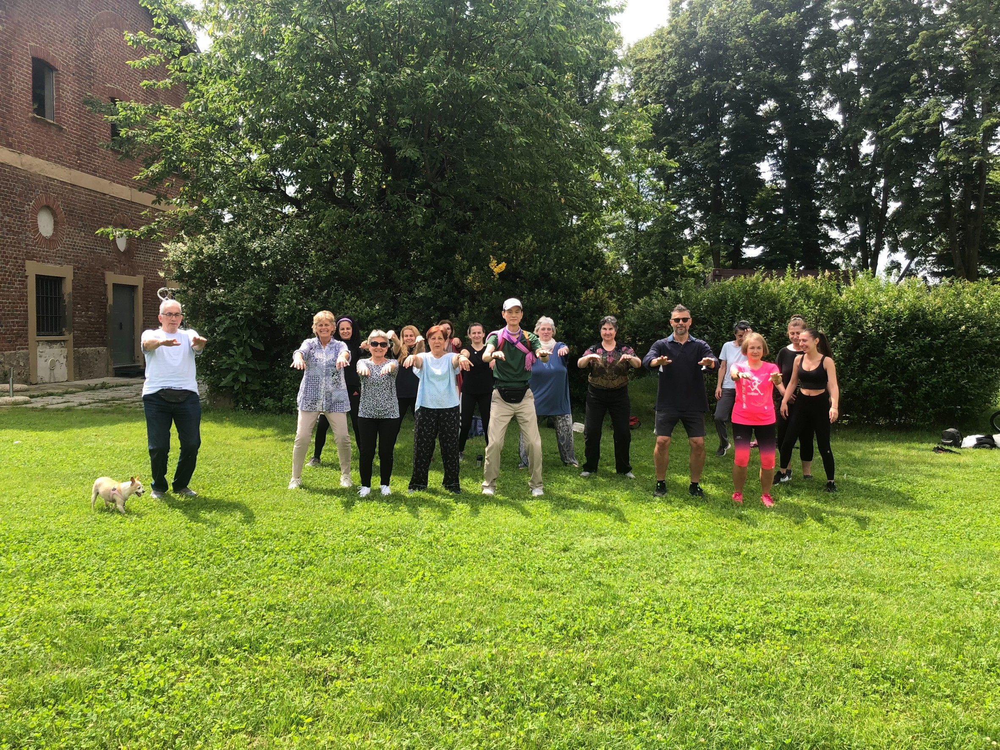

跌傷久治不癒，開啟東方智慧之門
兒時跌傷久治不癒，內在指引浮現——「西方醫學無法解決的，必須回到東方智慧。」自此啟蒙了對東方傳統養生、武術與道家修真的深度興趣。
羅氏自癒力療癒體系 創始人。超過二十餘年修證實踐，融合古法武學、東方經絡與量子能量學，致力以利他志業推廣身心整合，將傳承智慧分享給有緣之人。
兒時跌傷久治不癒，內在指引浮現——「西方醫學無法解決的，必須回到東方智慧。」自此啟蒙了對東方傳統養生、武術與道家修真的深度興趣。
先後拜入多位明師門下，鑽研東方傳統養生、經絡能量、太極、武術內功、道家修真、佛家心法、能量養生哲學⋯⋯廣納東西方傳承智慧，逾三十載未曾間斷。
親身經歷一場肉身逼近生命邊界的試煉，透過古法智慧與能量養生引領找回身心的和諧平衡，重回生命的流動。深刻體會「天賦的本然回歸力」的真正意義，並立志將這份體悟轉化為利他志業。
2014 年與十七世大寶法王結緣，並親賜法名，是羅老師多年身心整合學習路上一段深具意義的緣分。
受邀於義大利進行為期兩個月的身心能量巡迴。陪伴來自不同背景的個案，在能量引導後感受深度放鬆與內在平靜。當地多位個案體驗後分享身心狀態的覺察與轉變，重新找回對自身節奏的感知。能量的共鳴，跨越了語言與文化。
創立極心流工作室與羅氏自癒力療癒體系，將艱澀的能量運作整合為「六階段轉化課程」，讓更多有緣人能夠按部就班地探索內在的能量調和。
第三代傳承，師承李國政教授。董氏奇穴以其深厚的東方能量導引心法著稱，是東方傳統養生智慧的重要傳承脈絡。
第九代傳人親傳弟子，白鶴拳第四代親傳。武學內功不只是技擊，更是體會先天之炁、引導內在能量流動的根本功法。
資深導師。臼井靈氣為當代能量養生的代表法門，是能量引導者遠端能量陪伴、淨化能量場的重要修習。
2014 年受邀至印度與十七世大寶法王結緣，法王親賜珍貴法名。藏傳佛教文化與整體養生智慧，是羅老師心法傳承中重要的一脈。

受邀至米蘭近郊蒙扎（Monza）公園，進行為期兩個月的氣功養生公開教學交流。獲當地報紙《il Cittadino》以「東方平衡之術」為題進行專題報導，吸引義大利各地民眾參與，讓東方傳統養生智慧，與西方文化產生深刻的共鳴。